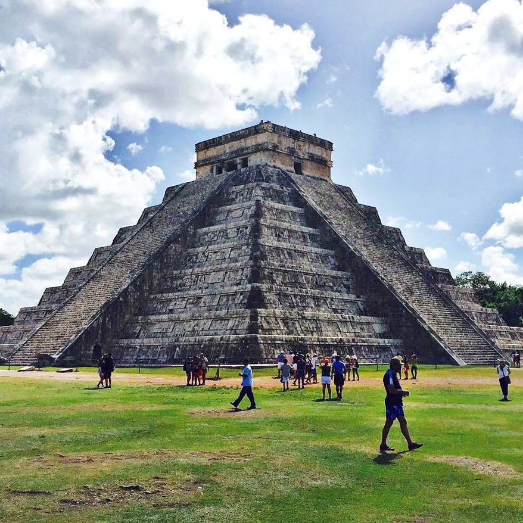

Chichén Itzá is a complex of Mayan ruins on Mexico's Yucatán Peninsula. A massive step pyramid, known as El Castillo or Temple of Kukulcan, dominates the ancient city, which thrived from around 600 A.D. to the 1200s. Graphic stone carvings survive at structures like the ball court, Temple of the Warriors and the Wall of the Skulls. Nightly sound-and-light shows illuminate the buildings' sophisticated geometry.